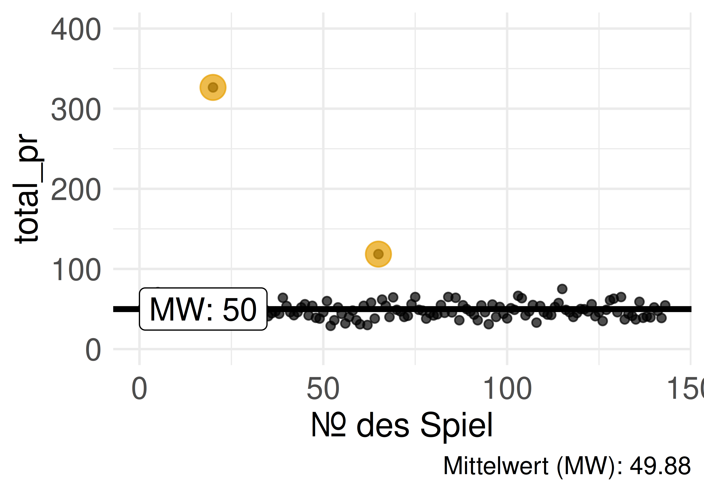
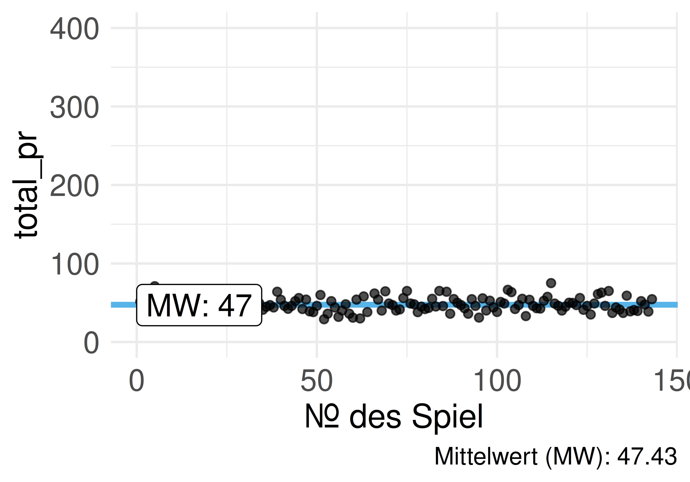
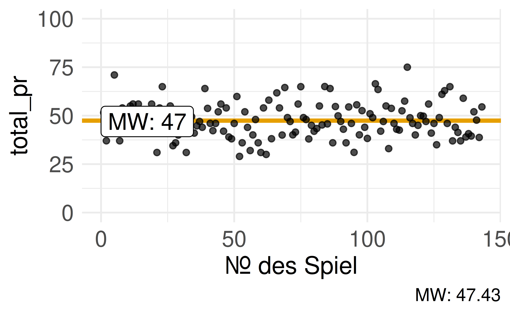
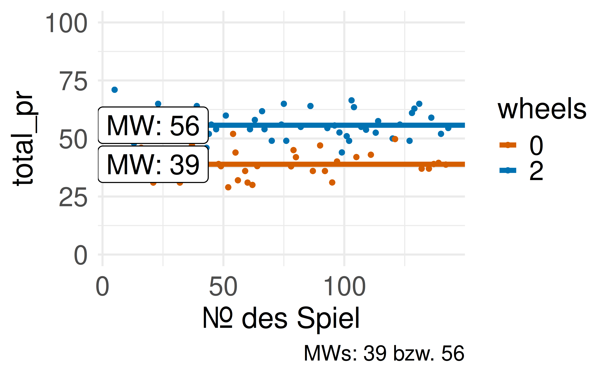

Statistik1
Zusammenfassen
Einstieg
Lernziele
- Sie können gängige Arten von Lagemaßen definieren.
- Sie können erläutern, inwiefern man ein Lagemaß als ein Modell verstehen kann.
- Sie können Lagemaße mit R berechnen.
Einstieg
Mittelwert als Modell
Beispiel: Notendurchschnitt
Ein Statistikkurs besteht aus drei Studentinnen: Anna, Berta und Carla. Anna hat eine 1, Berta eine 2, Carla eine 3.
Die Rechenregel zum Mittelwert lautet:
- Addiere alle Werte.
- Teile durch die Anzahl der Werte.
- Fertig!
Der Durchschnitt (das arithmetische Mittel) beträgt: 2.
Mittelwert als Modell
Definition: Mittelwert
Definition: Mittelwert
Der Mittelwert (MW, mean) von \(X\) ist definiert als die Summe der Elemente von \(X\) geteilt durch deren Anzahl \(n\). Man bezeichnet ihn auch mit \(\bar{x}\).
\[\bar{x} := \frac{1}{n} \sum_{i=1}^{n}{x_{i}} = \frac{x_{1}+x_{2}+\dotsb +x_{n}}{n}\]
Mittelwert als Modell
Mittelwert und Residuum
{kind=link}
Die Abweichung (“Fehler”, “Rest”, “Residuum”) \(e_i\) einer Beobachtung zum Mittelwert:
Daten = Modell + Rest, formal: \(y_i = \bar{x} + e_i\)
Mittelwert als Modell
Summe der Abweichungen ist Null
\[\begin{aligned} \sum_{i=1}^n (x_i-\bar{x}) &= \sum_{i=1}^n x_i - \sum_{i=1}^n \bar{x} \\ &= n\cdot \bar{x} - n\cdot \bar{x} = 0 \end{aligned}\]
Die nach oben ragenden Abweichungen gleichen die nach unten ragenden exakt aus.
Mittelwert als Modell
Mittelwert als lineares Modell
Definition: Lineares Modell
Ein lineares Modell beschreibt die Daten durch eine Gerade.


Mittelwert als Modell
In R: der Befehl lm()
lm()gibt alsCoefficient(Koeffizient) den Mittelwert zurück — den Achsenabschnitt (intercept).- Die Gerade des Mittelwerts schneidet die Y-Achse genau an diesem Punkt.
- Mehr zur
lm()-Syntax folgt in einem späteren Kapitel.
Mittelwert als Modell
Der wertvollste Fußballer im Hörsaal
Kommt Kylian Mbappé (Jahreseinkommen ca. 120 Mio. Euro) in einen Hörsaal mit 100 Studis, die je 1000 Euro/Jahr verdienen:
Der Mittelwert liegt bei über einer Million Euro — kein gutes Modell für das typische Vermögen im Hörsaal!
Mittelwert als Modell
Der Median als Modell
Einkommensverteilung im Hörsaal
{kind=link}
Der Mittelwert ist anfällig für Extremwerte — man sagt, er ist nicht robust.
Der Median als Modell
Definition: Median
Definition: Median
Die Merkmalsausprägung, die bei aufsteigend sortierten Beobachtungen in der Mitte liegt, nennt man Median.
Bei geradem \(n\) wird das arithmetische Mittel der beiden mittleren Werte gebildet.
Der Median als Modell
Median: der mittlere Wert einer sortierten Reihe
{kind=link}
{kind=link}
Der Median (1,79 m, rot) als Wert des “mittleren” Objekts bei aufsteigend sortierten Objekten: gleich viele Personen sind kleiner wie größer.
Der Median als Modell
Der Median ist robust
Erhöht sich das Einkommen einer Person im Hörsaal um das Hundertfache (z. B. durch ein Patent), bleibt der Median nahezu unverändert.
Wichtig
Bei (sehr) schiefen Verteilungen ist der Mittelwert wenig aussagekräftig, da er nicht mehr den “typischen” Wert widerspiegelt.
Der Median als Modell
Beispiel: Mariokart — Median vs. Mittelwert
{kind=link}
Ist der Mittelwert größer als der Median, nennt man die Verteilung rechtsschief.
Der Median als Modell
Quantile
Quantile als Verallgemeinerung des Medians
Der Median teilt eine Verteilung in eine untere und eine obere Hälfte — eine “50-Prozent-Marke”.
- Median der billigeren Hälfte → trennt das billigste Viertel vom Rest ab.
- Median der teureren Hälfte → trennt das teuerste Viertel vom Rest ab.
Warum nur in 25-%-Schritten aufteilen? Man kann genauso gut in 10-%- oder 1-%-Schritten aufteilen.
Quantile
Definition: Quartile
Definition: Quartile
Sortiert man die Daten aufsteigend, trennt das erste Quartil (Q1, 25 %) das Viertel der kleinsten Werte vom Rest ab. Den Median nennt man das zweite Quartil (Q2, 50 %). Das dritte Quartil (Q3, 75 %) trennt die drei Viertel kleinsten Werte vom obersten Viertel ab.
Quantile
Definition: Dezile & Quantile
Definition: Dezile
Die neun Quantile \(p = 0.1, 0.2, \ldots, 1\), die eine Verteilung in 10 gleich große Teile unterteilen, nennt man Dezile.
Definition: Quantile
Ein \(p\)-Quantil ist der Wert, der von \(p\) Prozent der Werte nicht überschritten wird. Quantil ist der Oberbegriff für Quartile, Dezile etc.
Quantile
Quartile für Mariokart-Verkaufsgebote
{kind=link}
Quantile
Quantile visualisiert
{kind=link}
{kind=link}
Alle Flächen sind gleich groß.
Quantile
Quantile berechnen mit R
Quantile
Beispiel: Körpergröße von Studierenden
{kind=link}
Quantile
Beispiel: Quantile der IQ-Verteilung
Der IQ wird üblicherweise als normalverteilt mit Mittelwert 100 und Streuung 15 angenommen.
{kind=link}
Quantile
Lagemaße
Definition: Lagemaß
Definition: Lagemaß
Ein Lagemaß (synonym: Maß der zentralen Tendenz) gibt einen Vorschlag, welchen Wert einer Verteilung wir als typisch, normal, erwartbar oder “mittel” ansehen sollten.
Gebräuchliche Lagemaße: Mittelwert, Median, Quantile (z. B. Quartile), Minimum, Maximum, Modus.
Lagemaße
Definition: Punktmodell
Definition: Punktmodell
Ein Modell, das für alle Beobachtungen ein und denselben Wert vorhersagt, heißt Punktmodell.
{kind=link}
Mittelwert, Median und Quartile sind Beispiele für Punktmodelle.
Lagemaße
Gruppierte Lagemaße


Innerhalb der Gruppen sind die Abweichungen zum Gruppen-Mittelwert oft geringer als zum ungruppierten Mittelwert — das Residuum wird kleiner.
Lagemaße
Wie man mit Statistik lügt
Checkliste: Transparenz einer Analyse
- Wurde die Art und Zeitdauer der Datenerhebung vorab festgelegt und berichtet?
- Wurden ausreichend Daten gesammelt (z. B. mind. 20 Beobachtungen pro Gruppe)?
- Wurden alle untersuchten Variablen berichtet?
- Wurden alle durchgeführten Interventionen berichtet?
- Wurden Daten aus der Analyse entfernt? Wenn ja, gibt es eine stichhaltige Begründung?
Wichtig
Stellen Sie hohe Anforderungen an die Transparenz einer statistischen Analyse.
Wie man mit Statistik lügt
Zusammenfassung
- Mittelwert: Summe der Werte geteilt durch deren Anzahl — nicht robust gegenüber Extremwerten
- Median: mittlerer Wert bei sortierten Daten — robust gegenüber Extremwerten
- Quantile: verallgemeinern den Median (Quartile, Dezile, Perzentile)
- Lagemaße sind Punktmodelle: Sie fassen eine Verteilung zu einem “typischen” Wert zusammen
- Gruppierte Lagemaße können Residuen verkleinern
- Transparenz ist der Schlüssel gegen Manipulation statistischer Analysen
Literaturhinweise
Referenzen

Statistik1 — Zusammenfassen